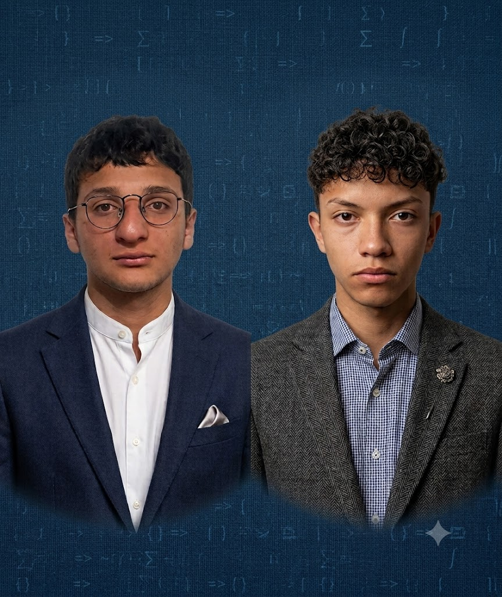

QUÉ SIGNIFICA EL NOMBRE
REDÍZ
Formado por las palabras Red y Raíz
repesenta cómo conectamos los medios tradicionales de las
empresas, es decir, sus raíces a las
nuevas tecnologías digitales
VISIÓN
En un plazo de 10 años ser una empresa con
reconocimiento internacional y ser lider en
innovacion gracias a la constante evolucion de
nuestros servicios digital ofrecidos a la empresa
Mision
Ofecer un servicio de desarrollo
tecnologia flexible y consciente que
a compañe a las pequeñas empersas en sus
transformacion digital a lo largo del
tiempo mateniendo simpre su autenticidad y adaptandose
a su evolucion
📚 Filosofia
REDÍZ fusiona la Red tecnológica y la Raíz tradicional del pequeño empresario bajo la filosofía de potenciar la tradición en lugar de reemplazarla.
Creamos software con alma mediante una digitalización consciente,
humana y accesible que democratiza los sistemas avanzados para todos. Más que un proveedor de código,
somos un aliado empático que acompaña a cada negocio para que su esencia evolucione y se expanda con éxito hacia el futuro digital
Valores corporativos
 -Autenticidad: Respetamos y valoramos la esencia de cada empresa.
-Autenticidad: Respetamos y valoramos la esencia de cada empresa.
 -Empatía: Escuchamos y entendemos profundamente las necesidades de cada cliente.
-Empatía: Escuchamos y entendemos profundamente las necesidades de cada cliente.
 -Innovación con propósito: Usamos la tecnología para mejorar, no para reemplazar lo que da valor e identidad a tu empresa.
-Innovación con propósito: Usamos la tecnología para mejorar, no para reemplazar lo que da valor e identidad a tu empresa.
 -Cercanía: Trabajamos desde un enfoque de colaboración y la confianza.
-Cercanía: Trabajamos desde un enfoque de colaboración y la confianza.
 -Adaptabilidad: Creamos soluciones únicas basándonos en tu caso especifico.
-Adaptabilidad: Creamos soluciones únicas basándonos en tu caso especifico.
 -Sostenibilidad: Impulsamos cambios que perduran gracias a nuestra constante innovación no solo en métodos sino como empresa en general.
-Sostenibilidad: Impulsamos cambios que perduran gracias a nuestra constante innovación no solo en métodos sino como empresa en general.
 -Compromiso: Acompañamos el proceso de transformación de principio a fin.
-Compromiso: Acompañamos el proceso de transformación de principio a fin.
 -Transparencia: Comunicamos con claridad cada paso del proceso y su fin respecto al objetivo de el cliente.
-Transparencia: Comunicamos con claridad cada paso del proceso y su fin respecto al objetivo de el cliente.
🎨 Colores corporativos
-Gris Profundo: Representa nuestra solidez, compromiso y la seriedad profesional con la que acompañamos cada transformación digital.
-Blanco: Simboliza nuestra transparencia comunicativa y la innovación con propósito que busca potenciar, sin reemplazar, la esencia de nuestros clientes.
-Gris Plateado: Refleja nuestra adaptabilidad y cercanía, permitiéndonos integrar soluciones únicas y colaborativas que respetan la autenticidad de cada empresa.
En su totalidad, esta combinación proyecta una imagen equilibrada y moderna, que sintetiza nuestra capacidad de ofrecer sostenibilidad y confianza en el entorno digital mediante un enfoque profundamente humano y transparente.
📜 Historia
- Redíz no nace de una coincidencia, sino de la convicción de que la tecnología aplicada con propósito es una herramienta clave para fortalecer y transformar a las pequeñas empresas.
- Surgimos al identificar una necesidad concreta en el mercado: muchos negocios locales, especialmente aquellos que dependen del servicio de domicilios, enfrentaban procesos desorganizados y soluciones digitales genéricas que no respondían a su realidad ni respetaban su identidad.
- Por ello, nuestra esencia se fundamenta en acompañar a las empresas en su transformación digital de manera flexible y consciente, desarrollando sistemas de información web para domicilios que se adaptan a su forma de trabajar, potencian su valor y evolucionan junto a ellas a lo largo del tiempo.
- Como organización emergente en constante crecimiento, contamos con la capacidad de ofrecer una adaptabilidad real frente a los desafíos del entorno digital actual, priorizando siempre una metodología colaborativa, ágil y centrada en las personas. Para Redíz, cada proyecto representa un paso más en nuestra historia, donde la transparencia, el compromiso y la innovación constante no solo guían nuestro trabajo, sino que definen quiénes somos y cómo acompañamos a nuestros clientes hacia un desarrollo sostenible y auténtico.
💼 Portafolio de servicios


💻 Servicios que ofrecemos
-Creación de sistemas de información
(con acompañamiento o servicio autónomo).
-Desarrollo web
-Bases de datos
-Mantenimiento y soporte técnico
-Integración de sistemas
🧾 Costo de servicios
El costo total por el sistema de información es de 500.000 COP. Ofrecemos diferentes plazos para cancelar este monto,
desde 1 sola cuota hasta 5 cuotas, sin intereses añadidos, quedadndo de la siguiente manera la distribución de pago mensual
1 Cuota: Cancelas el valor completo
2 Cuotas: 250.000 COP en un plazo de 2 meses
3 Cuotas: 166.000 COP en en un plazo de 3 meses
4 cuotas: 125.000 COP en en un plazo de 4 meses
5 cuotas: 100.000 COP en en un plazo de 5 meses
💡 Nuesta propuesta
Ofrecemos un servicio eficiente donde puedes optar por acompañar todo el proceso o simplement
e dar instrucciones y dejarlo en nuestras manos. Si eliges la segunda opción, te presentaremos
varias propuestas para iniciar el proyecto. Además, puedes seleccionar un plan que incluye una
aplicación móvil.
🧑💻 SOBRE NOSOTROS

Somos programadores orientados en creacion de sistemas de informacion,
es decir base de datos , interfaz grafica ,logica interna lo que nos brinda
gran versatilidad en los servicios ofrecidos